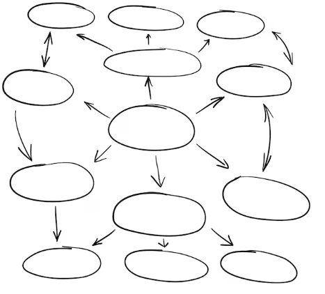

¡Hola, pequeños artistas digitales!
Para que tengamos muy claro todo lo que vamos a hacer en nuestro proyecto de "Pequeños artistas digitales", os he preparado un mapa mental. Pensad en él como un "mapa del tesoro" donde cada camino nos lleva a una aventura creativa diferente. En este mapa podéis ver todos los pasos y actividades que vamos a seguir durante las próximas semanas, desde que empezamos a explorar el arte hasta que creemos nuestra gran exposición virtual. Nos ayudará a saber siempre dónde estamos, qué haremos después y cómo encaja cada parte en nuestro gran objetivo: ¡convertirnos en unos artistas digitales increíbles! Echadle un vistazo y veréis lo fácil que es seguir nuestra ruta creativa.
